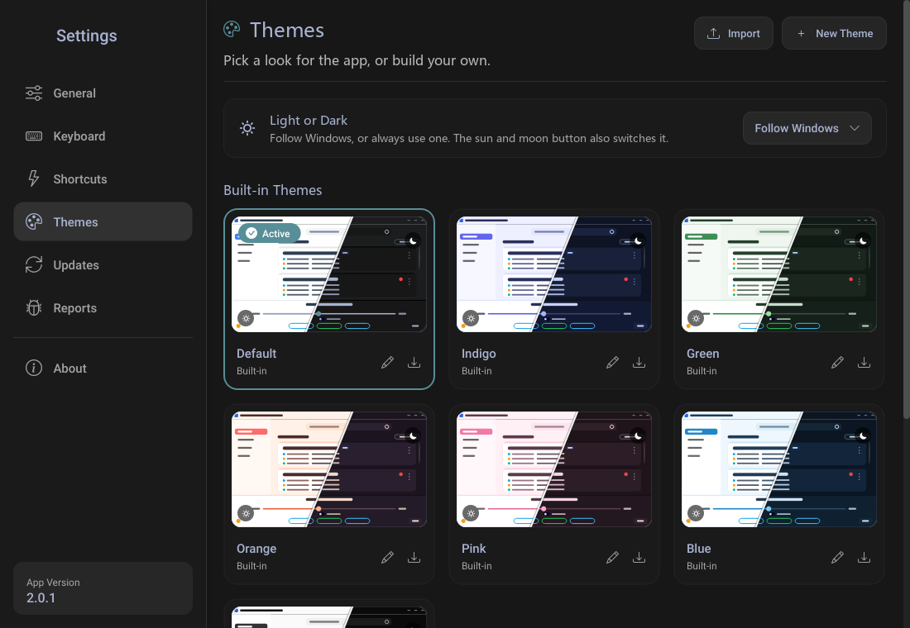

DocsUsing the app
Themes
Change how Sky Auto Piano looks: pick light or dark, use a built-in theme, build your own, and share it with friends as a small file.
Light or dark
By default the app follows Windows. If Windows apps are set to dark, the app is dark, and it switches by itself when you change the Windows setting.
- Click the sun or moon button in the top-right of the player to switch between light and dark. The app then stops following Windows.
- To follow Windows again, open Settings → Themes and set Light or Dark to Follow Windows. You can also pick Always light or Always dark there.
Every theme has a light and a dark version, so your theme stays the same when you switch.
Built-in themes
Open Settings → Themes and click a theme to use it straight away. Each preview shows the light half on the left and the dark half on the right.

| Theme | Look |
|---|---|
| Default | Clean white and near-black with a teal accent |
| Indigo | Soft lavender with an indigo accent |
| Green | Pale mint and deep forest green |
| Orange | Warm peach with an orange accent |
| Pink | Light blossom pink and a dark plum |
| Blue | Sky blue and deep navy |
| Black and White | Pure black and white with no color at all |
Built-in themes can't be changed, but the pencil on any of them makes a copy that you can.
Build your own theme
- Open Settings → Themes and press New Theme. It starts from the look you have now. To start from another theme, press the pencil on it instead.
- Give it a name and pick Editing: Light mode or Dark mode. You build the two versions one at a time.
- Pick the five Quick Colors. Each one paints every part of the app that belongs with it, and the whole app changes as you go.
- Open a section under All Colors if you want to change one single part.
- Switch to the other mode and do the same, then press Save Theme.
Quick Colors
The Quick Colors follow the tab you have open in the Live Preview:
| Preview tab | Quick Colors |
|---|---|
| Songs | Accent, Background, Cards and boxes, Text, Player bar |
| Menus | Pop-up background, Pop-up text, Highlight, Border, Dim |
| Alerts | Success, Warning, Error, Info, Text |
| Settings | Background, Cards, Borders, Descriptions, Switches and Save |
| Editor | Background, Cells, Notes, Highlighted cells, Info panel |
Every color picker supports opacity, so a color can be see-through.
Live Preview
A small picture of the app sits beside the builder and stays in view while you scroll. It shows the light and dark version side by side. Point at a color, or open a section, and the preview jumps to the right screen and lights up the part that color paints.
Undo, save and cancel
- Undo arrow
- Puts back the color it had when you started.
- Undo changes
- Does that for the whole light or dark version you're editing.
- Save Theme
- Keeps your theme. Cancel throws your changes away.
- Changed count
- Each section under All Colors shows how many of its colors you've changed.
Title bar
On Windows 11 the bar at the top of each window uses the theme's colors too. It follows the window background unless you set it under All Colors → Title Bar. Windows 10 keeps its normal light or dark title bar.
Theme file format
A theme file is plain JSON, so you can also write or tweak one by hand:
{
"format": "sky-auto-piano-theme",
"version": 2,
"name": "Night Sky",
"light": {
"app.surface": "#f4f6ff",
"app.text": "#1f2440",
"app.accent": "#4f6bed"
},
"dark": {
"app.surface": "#10142a",
"app.text": "#e6e9ff",
"app.accent": "#8aa2ff",
"popup.dim": "#00000099"
}
}formatmust besky-auto-piano-theme, andnamecan be up to 40 characters.- Colors are
#RRGGBB, or#RRGGBBAAwhere the last two digits are the opacity (00is clear,ffis solid). - Unknown names and broken colors are skipped, so an old theme file still opens in a newer app.
You only need the colors you want to change. Everything you leave out is worked out from app.surface, app.text and app.accent, so those three alone already make a full theme.
Color names
These are the names under All Colors, in the same order as in the app.
| Section | Names |
|---|---|
| Everyday Colors | app.surface base surface, app.text text, app.accent accent, app.success, app.error |
| Main Window | main.window window background, main.searchFill, main.searchText, main.searchIcon, main.buttonBorder, main.scrollbar |
| Title Bar | title.fill, title.text, title.border window border |
| Song Cards | card.fill, card.text title and values, card.label, card.edge top edge, card.author, card.transcriber, card.bpm, card.hold hold badge, card.menu, card.selected selected outline, card.favorite heart, card.storeTag |
| Player Bar | footer.fill, footer.text text and icons, footer.edge top edge, footer.track, footer.played, footer.handle, footer.play, footer.skip previous and next, footer.buttonFill, footer.loop, footer.speedFill, footer.speedText, footer.switch, footer.knob |
| Menu Drawer | drawer.fill, drawer.text tab text, drawer.activeStart active tab, drawer.selectionBar |
| Menus and Dialogs | popup.menuFill, popup.menuBorder, popup.menuHover menu highlight, popup.dialogFill, popup.dialogText, popup.confirm confirm button, popup.dim shade behind pop-ups |
| Notifications | toast.success, toast.warning, toast.error, toast.info, toast.text |
| Settings Window | settings.content page background, settings.sidebar, settings.sidebarEdge, settings.card, settings.cardBorder, settings.description, settings.switch switch on, settings.save save button |
| Sheet Editor | editor.window window background, editor.panel info panel, editor.grid grid lines, editor.dot grid dots, editor.note notes, editor.hover hovered cell, editor.active active cell, editor.export export button |
If a theme won't import
- "The selected theme file is invalid."
- The file isn't valid JSON,
formatis missing or wrong, or it has noname. Open it in a text editor and compare it with the example above. - A color didn't change
- Check that the name is spelled exactly as in the table, and that the color has 6 or 8 digits after the
#. - The title bar didn't change
- Title bar colors only work on Windows 11.